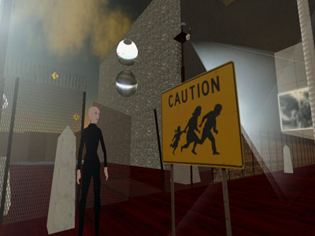

Borders, Boundaries &
Liminal Spaces

"Borders, Boundaries & Liminal Spaces", a three day conference in Second Life, will explore divisions and shed light on these ideas and on the nature of the synthetic environment.
How to get there: location
Note that all participants will have to first join the NMC guests group in Second Life prior to teleporting to here.

"Borders, Boundaries & Liminal Spaces", a three day conference in Second Life, will explore divisions and shed light on these ideas and on the nature of the synthetic environment.
How to get there: location
Full Program
(Pre-Program) Wednesday, April 25
http://slurl.com/secondlife/Learning/169/171/26/
Note that all participants will have to first join the NMC guests group in Second Life prior to teleporting to here.
Ars Virtua is a new media center and gallery located in the synthetic world of Second Life. It is a new type of space that leverages the tension between 3-D rendered game space and terrestrial reality, between simulated and simulation. Ars Virtua is sponsored by the CADRE Laboratory for New Media.
Previous Announcement:
- Borders define geographic boundaries of political entities or legal jurisdictions, such as governments, states or sub-national administrative divisions.
- The boundary of a set (in mathematics) is those points that can be approached from within the set and without. It is all points not contained in the interior of a set.
- The liminal state (in ritual) is characterized by ambiguity, openness, and indeterminacy. One's sense of identity dissolves to some extent, bringing about disorientation. Liminality is a period of transition, during which normal limits to thought, self- understanding, and behavior are relaxed, opening the way to something new.
Borders are frequently under contention; they are regions that neatly separate two entities and enable a form of deconstruction. However, the distinctions formed by borders are not sufficient and we realize that often the border begins to represent a third region and generates more contentious borders.
It is truly difficult to discern the breadth a border, an indeterminate space, and it's depth is dependent on the sphere, there is a point when you can cross into the "other." Borders would be impossible to cross if this was false and the liminal space would disappear.
It is our assertion that the synthetic world is a fundamentally liminal space. This is not because it is functionally transitional, except perhaps that it is not a destination, but that it functions parallel to 'real' space and remains temporary in its occupancy.
Our interest lies in both the synthetic and the terrestrial world though fundamentally one is a subset of the other. A Venn diagram may hold visual information about this relationship, but it misses the point. There is a functional liminal space that exists outside the terrestrial. We want to emphasize that while there is a relationship here the liminal space that is created synthetically doesn't exist in a terrestrial sense. So the atoms and the electrons are terrestrial and represented by our friend Venn, the intellectual space is not however anything but contained by materials and represents a different space.
To that end we are considering sessions relating to gender/sexuality, race, architecture, body/technology, body/digital image, life/non- life, transgenics, and game/environment. If you have an interest in these topics and would like to present, or would like to suggest another topic please contact nmc@arsvirtua.com
Conference Date: April 26-28, 2007